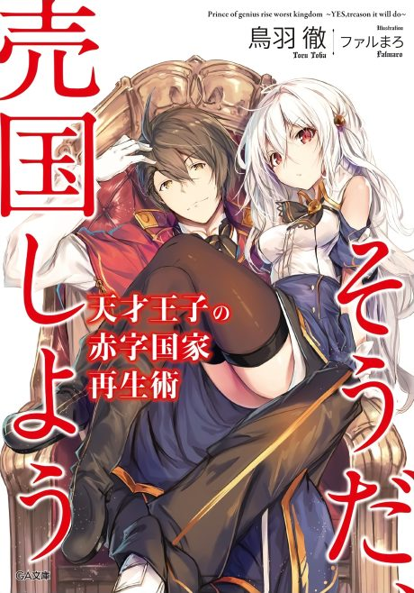

The Genius Prince's Guide to Raising a Nation Out of Debt
天才王子の赤字国家再生術
After the anime, read the light novel from Volume 6.
7.2AniList score
—Animeter, no votes yet
12episodes
Anime finished. Where does the story go next?
Start at Volume6
Pick up the light novel at volume 6 after the anime.